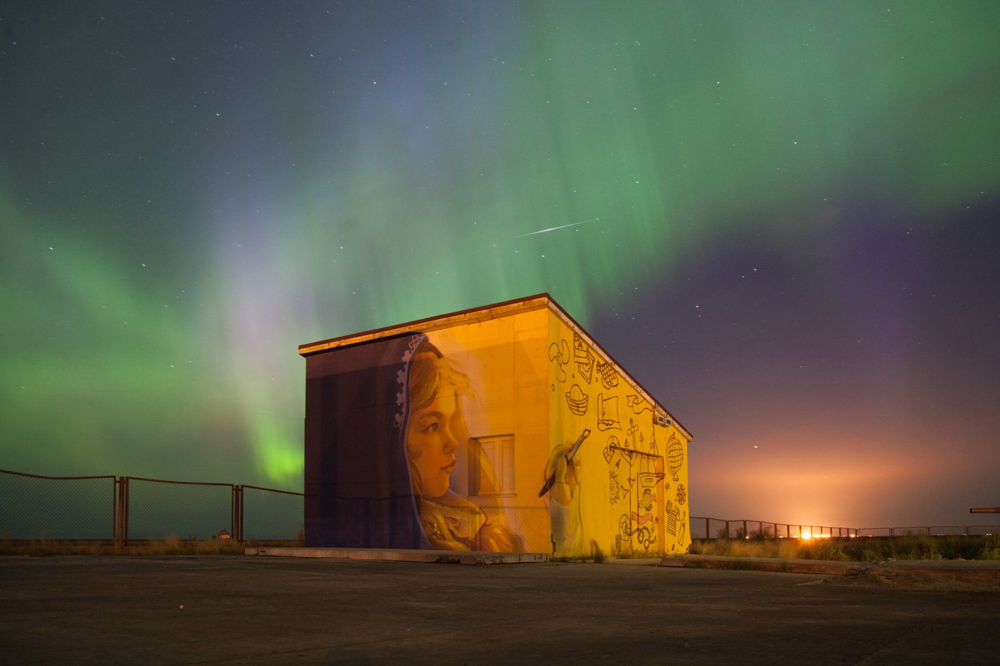
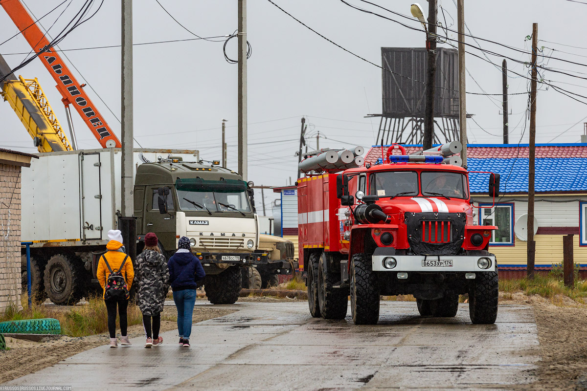
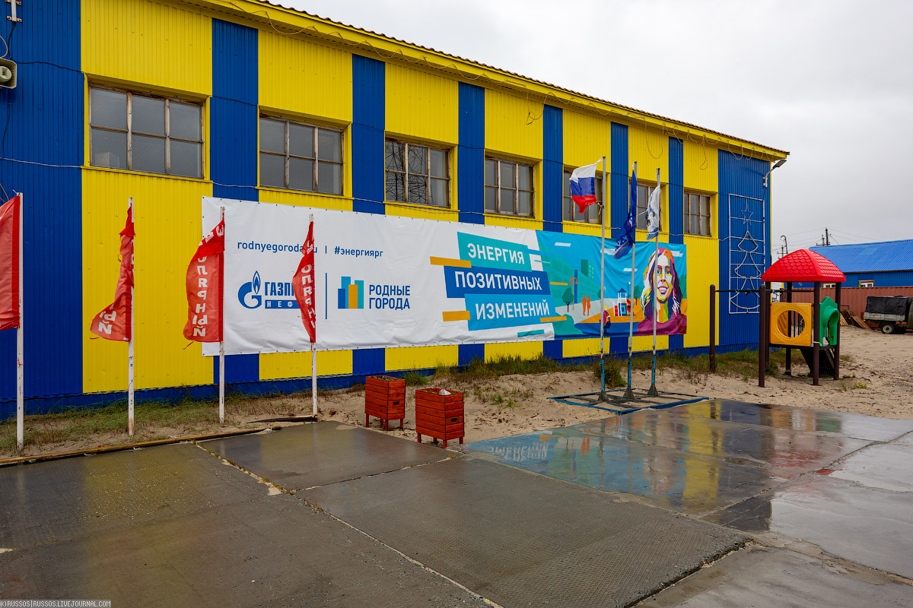
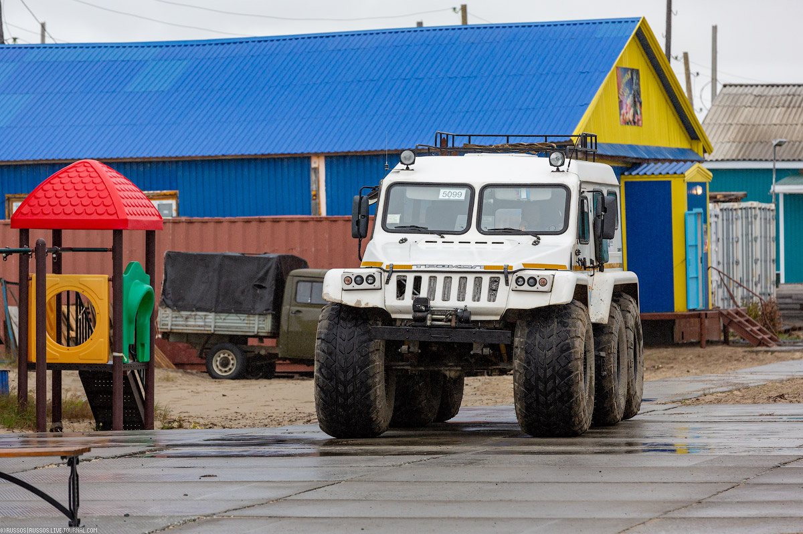
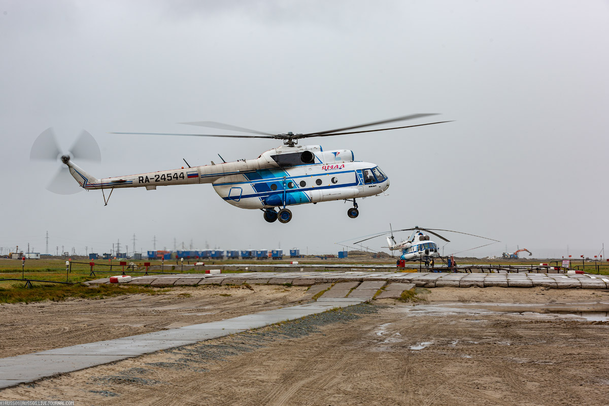

Дата родения: 30.09.2004
Родилась в ЯНАО, полуостров Ямал, в посёлке Мыс-Каменный.
Долгое время Мыс Каменный вообще никак не обозначался на картах СССР, поскольку был объявлен секретным портом для подводных лодок.
В Мысе Каменном преобладает русское население – около 60 %, численность ненцев – 33,8%.
С 2005 до 2015 года только из Мыса Каменного по программам переселения жителей Крайнего Севера в другие районы страны переехало 227 семей. Такой тенденции не наблюдалось ни в одном поселении района.
Тут нет асфальта — только плита аэродромная ПАГ, сделанная из высокопрочного и морозостойкого бетона и выдерживающая значительные нагрузки.
«Родные города» — это программа социальных инвестиций «Газпром нефти», о ней знает каждый житель Мыса Каменного и не только по красочным баннерам. Каждый год благодаря проекту для школьников и старших ребят проводят спортивные мероприятия, праздник творчества «Дыхание Арктики».
Местный транспорт «Трэкол». Чтобы им управлять, нужны права тракториста.
В поселке действуют две вертолетные площадки.
Жила в Мыс Каменном до 15 лет. Затем, окончив 9 классов, уехала в Екатеринбург и поступила в ЕКТС на специальность "Информационные системы и программирование".
Долгое время занималась танцами и выступала на разных мероприятиях.
Увлекалась физикой и информатикой, благодаря чему учовствовала в Интеллектуальном турнире для старшеклассников "Умножая таланты".
Занималась волейбоом и баскетбоом. Ездила на ежегодную спартакиаду среди Ямаьлского района.
Люблю смотреть аниме и сериалы
К моим любимым аниме можно отнести:
На данный момент я обучась на 3 курсе группы ПР-31
Расписание можно посмотреть здесь